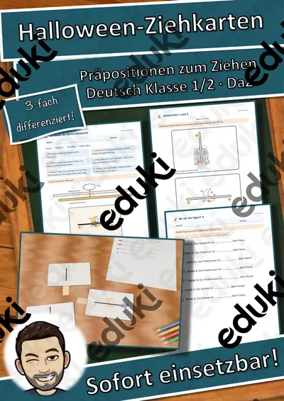
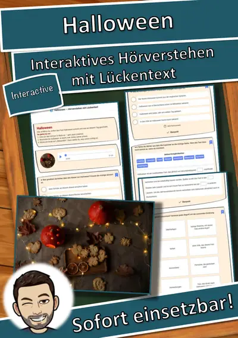
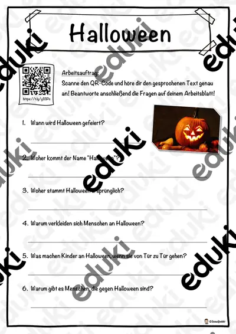
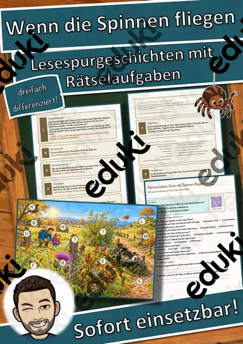

Spinnen-Rätsel-Faltkarte – Halloween-Rätsel lesen und schreiben, Pop-up-Spinne, 3-fach differenziert (Klasse 2/3)
Ein Blatt, vier Ecken, vier Rätsel! Meine Kinder falten eine Spinnen-Rätsel-Karte: Außen ein Netz mit Rätseln, innen die Lösungen – und beim Aufklappen springt eine Spinne hoch.
Dreifach differenziert (★/★★/★★★):
- ★ leichte Rätsel lesen und Lösungskarten einkleben
- ★★ schwierigere Rätsel lesen und Lösungen schreiben
- ★★★ eigene Rätsel in der Rätsel-Werkstatt schreiben und eine eigene Karte falten
Enthalten (8 Seiten):
- Hinweise für Lehrkräfte mit Ablauf, Kopierplan, Lösungen und Lehrplanbezug
- Überblick mit Musterfoto
- Faltanleitung in 6 Schritten
- 2 Rätselbögen und 1 leerer Bogen
- Lösungskarten, Spinne und Streifen für die Hexentreppe
- Rätsel-Werkstatt
Die Motive sind mit KI erstellt und von mir geprüft, das Foto ist ein eigener 3D-Render meiner Vorlage. Viel Spaß beim Rätseln wünscht Snice
FachDeutsch
KlasseKl. 2–3
SchulformGrundschule
MaterialartArbeitsblätter, Mal- und Bastelvorlagen, Fördermaterial/Inklusion
Ähnliche Materialien

Halloween-Ziehkarten – Präpositionen sichtbar machen: über, vor, neben, auf, 3-fach differenziert (Klasse 1/2, DaZ)

Lesespur: Die Spinne – Lesespurgeschichte mit Rätseln (Klasse 5)

Spinnen Lückentext mit Wortspeicher Hörverstehen und Suchsel

Halloween – Hörverstehen mit Lückentext (interaktiv)

Halloween Lückentext mit Wortspeicher Hörverstehen und Suchsel

Halloween - Hörverstehen

Lesespur: Wenn die Spinnen fliegen – Lesespurgeschichte mit Rätseln (Klasse 3)